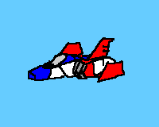

I’m Gabriele Rastello and this is my homepage!
Currently I’m a master student in mathematics at UniTo (Turin, Italy). My main mathematical interests lie somewhere between Logic, Algebra and Category Theory. I also kinda of enjoy computer science, playing around with GNU/Linux, writing crappy code, ranting about free software and all that good stuff.
I also have a youtube channel where I make introductory videos on Category Theory in Italian (but I've been inactive for a while) and a blog because some times I like to write about things. This website also hosts a collection of notes and other documents on various topics (basically only math) that might be useful to someone else.
You can send me an email at gabriele · rastello × edu · unito · it.